| Res | Horse | Price | BSP | Dr | Form | Crse | Suit | OR | Spd | TF | Last comment |
|---|---|---|---|---|---|---|---|---|---|---|---|
| 2 | 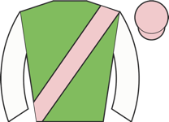 Squadron | 2.25 | - | 6 | unraced | - | |||||
| 7 | 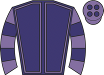 See The Mountain | 5.50 | - | 5 | unraced | - | |||||
| 5 | 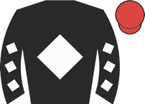 Galipi ◆ 1 ★ EYE | 6.00 | - | 7 | 3 | 79 | Slowly away, held up in rear, ridden over 2f out, kept on inside final furlong, went third | ||||
| 3 | 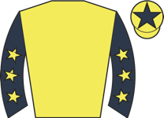 Power Effort ◆ 3 | 8.00 | - | 8 | unraced | - | |||||
| 6 | 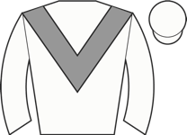 Spruce | 8.00 | - | 3 | unraced | - | |||||
| 4 | 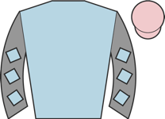 Rafe's da Man ⚠ hard trk | 15.00 | - | 1 | 4 | 83 | Held up in rear, ridden and minor headway 2f out, faded inside final furlong | ||||
| 1 | 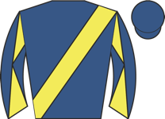 Breacher ◆ 2 | 21.00 | - | 4 | unraced | - | |||||
| 8 | 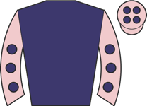 Jiro ▲ cls | 51.00 | - | 2 | 6 | 81 | Soon raced in close second, ran green and wandered when led after 1f, pushed along and hea |
| Res | Horse | Price | BSP | Dr | Form | Crse | Suit | OR | Spd | TF | Last comment |
|---|---|---|---|---|---|---|---|---|---|---|---|
| 4 | Connie's Rose ◆ 3 ★ EYE ▲ cls | 3.50 | - | 1 | 5-6-3-2-7-2 | going✓ trip✓ | 66 | 93 | ★★★★☆ | Led group towards far side, ridden and headed overall over 1f out, kept on inside final fu | |
| 2 | 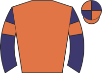 The Thames Boatman M2 | 3.75 | - | 2 | 2-9-2-1-4-5 | going✓ trip✓ trk✓ | 76 ↓ | 94 | ★★★☆☆ | Wore hood to post, took keen hold, raced in last, shaken up over 2f out, ridden and weaken | |
| 1 | 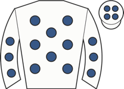 King Of Stars ⚠ ground | 4.33 | - | 5 | 5-7-3-4-12-10 | trk✓ | 80 | 94 | ★★★★★ | Close up, soon disputed, outpaced over 1f out, weakened quickly final furlong | |
| 5 | 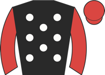 Silver Wraith ◆ 1 | 5.00 | - | 6 | 3-2-1-1-2-7 | going✓ trk✓ | 75 ↑ | 94 | ★★★☆☆ | Slowly away, towards rear, some headway over 1f out, outpaced inside final furlong, soon w | |
| 3 | Cayman Tai ◆ 2 | 9.00 | - | 3 | 5-3-2-1-2-9 | going✓ trip✓ trk✓ | 74 ↑ | 94 | ★★★★☆ | Wore hood to start, reared start, soon steadied in midfield, pushed along over 1f out, wea | |
| 6 | 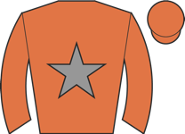 Fresh Fade ⚠ hard trk ⚠ ground | 34.00 | - | 4 | 6-13-4-5-6-12 | 78 ↓ | 88 | ★★☆☆☆ | Prominent, pushed along over 2f out, weakened quickly inside final furlong |
| Res | Horse | Price | BSP | Dr | Form | Crse | Suit | OR | Spd | TF | Last comment |
|---|---|---|---|---|---|---|---|---|---|---|---|
| 2 | 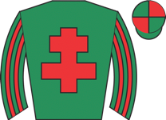 Harry Knows ◆ 3 ⚠ draw ▲ cls | 2.75 | - | 7 | 2-4-2 | 1r 1p | trip✓ trk✓ | 85 | 95 | ★★★★☆ | Prominent, led 2f out, shaken up over 1f out, headed final strides |
| 4 | 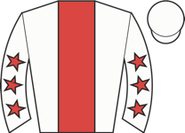 Metamouse ◆ 2 ★ EYE | 3.75 | - | 8 | 4-1 | trip✓ draw✓ | 79 | 90 | Held up in touch, switched right 2f out, pushed along and headway over 1f out, led final f | ||
| 3 | 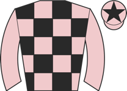 Flying Pirate ◆ 1 ★ EYE ⚠ draw ▲ cls | 5.00 | - | 4 | 1 | 1r 1W | trip✓ trk✓ | 98 | Tracked leaders, pushed along into third over 1f out, ran green and hung left final furlon | ||
| 1 | 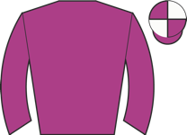 Treasurer ⚠ ground ▼ cls | 9.00 | - | 3 | 4-12 | 88 | In rear on far side, outpaced over 3f out, ridden and made no impression over 2f out, no c | ||||
| 5 | 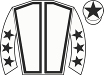 Poppy Foxy ★ EYE ▲ cls | 11.00 | - | 1 | 6-1 | 66 | 89 | Went left start, midfield, not clear run 2f out, soon ridden, in touch with leaders enteri | |||
| 6 | 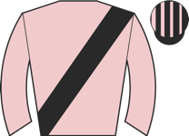 Keep Grating | 21.00 | - | 9 | unraced | draw✓ | - | ||||
| 9 | 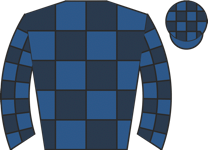 Ten Year Stretch ▲ cls | 26.00 | - | 2 | 7 | 1r | 92 | Held up in rear, pushed along over 2f out, passed beaten rivals 1f out, never a factor | |||
| 10 | 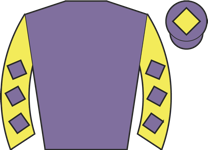 Calendar Boy ⚠ draw | 34.00 | - | 6 | unraced | - | |||||
| 11 | 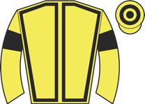 Martha Brown ▲ cls | 34.00 | - | 11 | 9-3 | trk✓ draw✓ | 86 | Led, headed over 2f out, ridden 2f out, kept on one pace from over 1f out | |||
| 8 | 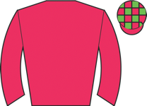 Ten Of Clubs ⚠ draw ▲ cls | 34.00 | - | 5 | 8 | 91 | Slowly away, always towards rear | ||||
| 7 | 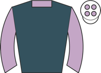 Herbert Hall ⚠ hard trk ▲ cls | 34.00 | - | 10 | 9 | draw✓ | 88 | Midfield, ridden over 2f out, weakened over 1f out |
| Res | Horse | Price | BSP | Dr | Form | Crse | Suit | OR | Spd | TF | Last comment |
|---|---|---|---|---|---|---|---|---|---|---|---|
| 3 | 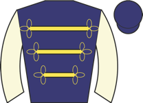 Addison Grey ◆ 1 ▼ cls | 3.00 | - | 5 | 3-1-10-2-2-5 | going✓ trip✓ | 94 ↑ | 95 | ★★★★☆ | Wore hood and went early to post, held up in rear, pushed along over 1f out, switched righ | |
| 2 | 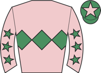 Sudden Flight ◆ 2 M2 | 3.75 | - | 2 | 4-1-14-14-3-2 | trip✓ trk✓ | 86 ↓ | 97 | ★★★☆☆ | Prominent, ridden to challenge over 1f out, led final furlong, headed close home | |
| 7 | 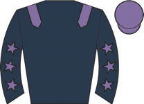 Another Abbot ◆ 3 ★ EYE ▲ cls | 3.75 | - | 7 | 1-12-10-4-7-1 | 1r | going✓ trip✓ | 88 | 95 | ★★★★★ | Taken down early, wore earplugs, held up in mid-division, made good headway 2f out, ridden |
| 4 | 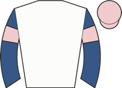 Jel Pepper | 11.00 | - | 6 | 4-7-1-4-6-6 | 95 | 93 | ★★★☆☆ | Led early, soon headed and dropped to midfield after 1f, short of room and dropped to rear | ||
| 1 | 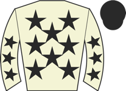 Fleetwater ⚠ ground | 13.00 | - | 1 | 10-2-6-2-3-9 | trip✓ trk✓ | 81 | 97 | ★★★★☆ | Prominent, outpaced over 1f out, weakened inside final 110yds | |
| 6 | 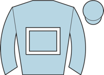 Egoli ⚠ ground | 17.00 | - | 3 | 1-6-5-4-8-9 | trip✓ | 90 | 94 | ★★☆☆☆ | Held up in rear, ridden 2f out, never involved | |
| 5 | 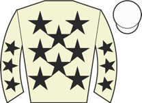 Queue Dos ▲ cls | 17.00 | - | 4 | 4-1-4-7-3-8 | trip✓ trk✓ | 76 | 91 | ★★☆☆☆ | Restless in stalls, midfield on outer, shaken up over 2f out, soon ridden, weakened over 1 |
| Res | Horse | Price | BSP | Dr | Form | Crse | Suit | OR | Spd | TF | Last comment |
|---|---|---|---|---|---|---|---|---|---|---|---|
| 2 | 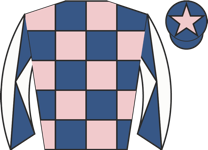 Storming Point ◆ 1 ▲ cls | 1.80 | - | 3 | 2-3-2 | 87 | 92 | ★★★★★ | Prominent, ridden and chased leaders 3f out, headway to chase winner entering final furlon | ||
| 1 | 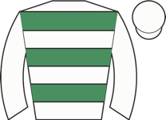 Aleatrix | 4.00 | - | 7 | unraced | - | |||||
| 4 | 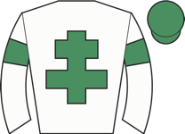 Zachary Hickes ◆ 2 | 8.00 | - | 5 | 4-6 | 90 | Midfield, ridden and in touch with leaders 3f out, faded over 1f out | ||||
| 6 | 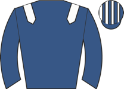 Al Qatem ▲ cls | 8.50 | - | 4 | 8 | 85 | Midfield, ridden over 2f out, weakened inside final furlong | ||||
| 3 | Virtue Diligence | 21.00 | - | 1 | 9-8 | 88 | Held up in rear, ridden over 3f out, some headway 2f out, no further impression | ||||
| 5 | 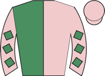 Sevenkingsmustdie | 26.00 | - | 6 | 6-7-10 | 80 | ★★☆☆☆ | Held up in midfield, ridden over 3f out, no impression over 1f out | |||
| 7 | 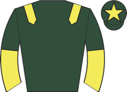 Paniolo Creek ◆ 3 | 67.00 | - | 2 | unraced | - |
| Res | Horse | Price | BSP | Dr | Form | Crse | Suit | OR | Spd | TF | Last comment |
|---|---|---|---|---|---|---|---|---|---|---|---|
| 1 | Gone By ◆ 1 | 1.83 | - | 3 | 2-2-1 | going✓ trk✓ | 90 | 86 | ★★★★☆ | Made all, unchallenged, drew clear 2f out, very easily | |
| 3 | 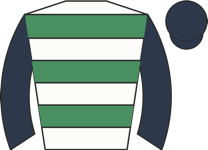 Mythical Valentine ◆ 2 M2 | 3.50 | - | 1 | 9-5-3-2-1 | going✓ trip✓ | 79 | 88 | ★★★☆☆ | Wore hood to start, held up towards rear, headway from over 3f out, switched towards centr | |
| 2 | 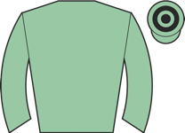 Pearl River ◆ 3 ★ EYE ▲ cls | 4.33 | - | 2 | 4-3-1-5-8-1 | going✓ trk✓ | 88 ↑ | 88 | ★★★★★ | Tracked leaders, pushed along well over 2f out, angled out right off rails and went second |
| Res | Horse | Price | BSP | Dr | Form | Crse | Suit | OR | Spd | TF | Last comment |
|---|---|---|---|---|---|---|---|---|---|---|---|
| 6 | 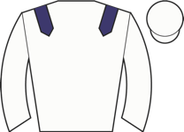 Legacy Rock ◆ 3 ★ EYE ▲ cls | 3.00 | - | 5 | 6-9-4-1-1-2 | going✓ trip✓ trk✓ | 72 ↑ | 88 | ★★★★☆ | Keen, held up in rear, headway between horses over 1f out to challenge leader, stayed on i | |
| 2 | 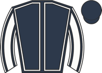 Lyra Lea ◆ 1 M2 ★ EYE ▼ cls | 4.50 | - | 4 | 1-8-7-3-4-2 | 73 | 92 | ★★★☆☆ | Raced centre, disputed lead, pushed along into clear lead over 1f out, ridden and kept on | ||
| 1 | Hot And Cold ◆ 2 ★ EYE | 5.00 | - | 2 | 5-6-1 | trip✓ | 75 | 89 | ★★★★☆ | Made all, ridden over 1f out, kept on well | |
| 4 | Dark Sovereign | 6.00 | - | 1 | 4-5-3-4 | 73 | 92 | ★★★★★ | Rear of midfield, outpaced halfway, taken wide to make some headway 1f out, kept on but no | ||
| 5 | 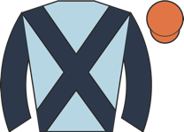 Station Bar ★ EYE ▲ cls | 9.00 | - | 3 | 2-2-4-6-8-1 | trip✓ trk✓ | 67 | 89 | ★★★☆☆ | Went to post early in hood, chased leader, smooth headway to press leader 2f out, soon led | |
| 3 | 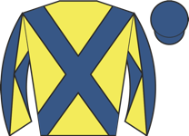 John Harrison ⚠ ground | 11.00 | - | 6 | 11-8-2-4 | 1r | trk✓ | 63 | 88 | ★★☆☆☆ | Chased along start, held up in last pair, pushed along over 1f out, went third final furlo |
| Res | Horse | Price | BSP | Dr | Form | Crse | Suit | OR | Spd | TF | Last comment |
|---|---|---|---|---|---|---|---|---|---|---|---|
| 2 | 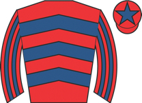 Perfidia ◆ 1 ★ EYE | 2.75 | - | 1 | 2-1-3-5-9-1 | going✓ trk✓ | 57 | 89 | ★★★★★ | Made all, pushed along over 2f out, kept on well final furlong | |
| 4 | 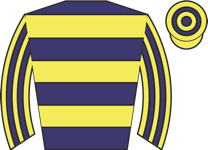 Approaching Dawn ◆ 3 M2 ⚠ ground | 4.00 | - | 7 | 8-7-5-1-9-3 | 3r 1W | trk✓ | 46 | 95 | ★★★☆☆ | Went to post early wearing red hood, dwelt, in rear, pushed along 2f out, ridden and ran o |
| 1 | 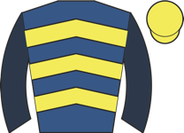 Mayor Of Maghera | 5.00 | - | 3 | 8-9-14---3-4 | 1r 1p | trk✓ | 61 ↓ | 84 | ★★★★☆ | Tracked leaders, pushed along over 1f out, kept on one pace |
| 6 | 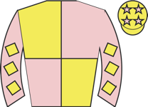 Bay Dream Believer ◆ 2 ▼ cls | 7.00 | - | 5 | 9-13-10-5-1-7 | going✓ trk✓ | 61 | 88 | ★★★☆☆ | Slowly away, in rear, making headway when short of room on far side 2f out, weakened insid | |
| 5 | 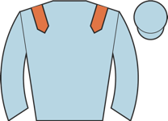 Keats House ⚠ ground | 11.00 | - | 6 | 1-4-2-7-7-5 | 1r 1W | trk✓ | 63 | 91 | ★★★★☆ | In touch with leaders, pushed along on far side over 1f out, weakened inside final furlong |
| 7 | 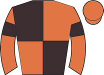 Without Delay ⚠ ground | 15.00 | - | 4 | 6-10-11-5-3-10 | 1r | 47 | 94 | ★★☆☆☆ | Held up in rear, ridden 2f out, never in contention | |
| 3 | 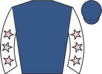 Second Fiddle ▼ cls | 26.00 | - | 2 | 7-10-10-8-11-4 | 1r | 60 ↓ | 92 | ★★☆☆☆ | Wore hood to post, slowly away, held up in touch, pushed along well over 1f out, never thr |
| Res | Horse | Price | BSP | Dr | Form | Crse | Suit | OR | Spd | TF | Last comment |
|---|---|---|---|---|---|---|---|---|---|---|---|
| 3 | 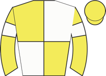 Turnstile ◆ 1 ⚠ ground ▼ cls | 2.88 | - | 7 | 4-3-4-7-3-3 | 1r 1p | trk✓ | 72 | 95 | ★★★★★ | Midfield, ridden and headway 2f out, kept on |
| 0 | Heffernan Kingdom ◆ 2 ⚠ hard trk ▲ cls | 3.25 | - | 5 | 6-3 | 95 | Wore hood to post, prominent, pressed leader 2f out, ridden to lead over 1f out, headed in | ||||
| 1 | Bear Lee ◆ 3 ★ EYE ▲ cls | 6.00 | - | 1 | 4 | 91 | Wore hood to start, held up towards rear, outpaced before halfway, rallied and some headwa | ||||
| 2 | Lexington Boom | 9.00 | - | 3 | unraced | - | |||||
| 5 | Dadawada | 9.00 | - | 6 | unraced | - | |||||
| 4 | Aodhan ⚠ ground ▼ cls | 15.00 | - | 2 | 8-10 | 88 | Held up in rear, ridden along over 2f out, soon beaten | ||||
| 6 | Just For Monty | 21.00 | - | 4 | 5 | 88 | In touch in rear, ran green and ridden 2f out, weakened over 1f out |
| Res | Horse | Price | BSP | Dr | Form | Crse | Suit | OR | Spd | TF | Last comment |
|---|---|---|---|---|---|---|---|---|---|---|---|
| 5 | High Degree ◆ 1 ★ EYE ▼ cls | 4.50 | - | 8 | 1-5-4-6-2-3 | going✓ | 92 | 96 | ★★★★☆ | Earplugs removed at start, chased leader, ridden 2f out, challenged winner over 1f out, ke | |
| 4 | Strength of Spirit M2 ★ EYE ▼ cls | 5.00 | - | 2 | 1-1-3-8-9-3 | 2r 1W | going✓ trk✓ | 87 ↑ | 95 | ★★★★☆ | In touch, switched right over 2f out, made steady headway over 1f out, soon ridden, challe |
| 1 | Haayimm ◆ 2 ▼ cls | 5.50 | - | 5 | 3-1-2 | trk✓ | 95 | 91 | ★★★★★ | Wore hood to post, in touch in rear, ridden over 3f out, kept on entering final furlong, c | |
| 6 | Pandemonium ◆ 3 ▼ cls | 5.50 | - | 6 | 1-1-7-12-2 | 1r 1p | trip✓ trk✓ | 87 | 88 | ★★★☆☆ | Led, shaken up over 2f out, ridden over 1f out, faced challenges final 110yds, headed fina |
| 7 | Two B Tanned | 13.00 | - | 9 | 1-5-3-7-1-8 | 1r 1W | going✓ trk✓ | 88 | 90 | ★★★☆☆ | Wore hood to start, led, pushed along when headed 2f out, weakened quickly final furlong |
| 9 | Rochfortbridge ▼ cls | 13.00 | - | 1 | 1-4-5-2-4-9 | trk✓ | 95 | 97 | ★★☆☆☆ | Towards rear, headway over 2f out, ridden 2f out, weakened quickly and soon beaten over 1f | |
| 3 | Thunder Wonder ⚠ ground ▼ cls | 13.00 | - | 7 | 7-13-10-10-4-8 | 1r | 83 ↓ | 92 | ★★★☆☆ | Wore earplugs to post, took keen hold, raced far side, prominent, ridden and pressed leade | |
| 8 | Marhaba Ghaiyyath ▼ cls | 13.00 | - | 4 | 2-8-19-6-5-12 | going✓ | 97 | 90 | ★★☆☆☆ | Wore earplugs to post, raced centre, in touch with leaders, ridden 3f out, weakened over 1 | |
| 2 | Dwindling Funds ⚠ ground ▲ cls | 15.00 | - | 3 | 6-2-2-11-12-4 | 3r 2p | trip✓ trk✓ | 72 | 92 | ★★☆☆☆ | Disputed lead, led outright 3f out, pushed along 2f out, headed 1f out, weakened final 110 |
| 0 | Monoceros ▼ cls | 17.00 | - | 10 | 1-3---3-5 | 2r 1p | going✓ trk✓ | 83 | 94 | ★★☆☆☆ | Prominent, shaken up over 3f out, ridden and weakened over 2f out |
| Res | Horse | Price | BSP | Dr | Form | Crse | Suit | OR | Spd | TF | Last comment |
|---|---|---|---|---|---|---|---|---|---|---|---|
| 7 | Sanditon ◆ 2 | 2.88 | - | 1 | 6-9-6-5-1-3 | trip✓ trk✓ | 55 | 94 | ★★★★☆ | Held up in rear, pushed along to make headway inside final furlong, kept on | |
| 1 | Classy Clarets ◆ 1 | 3.00 | - | 5 | 3-1-3-2-4-5 | 3r 2p | trk✓ | 55 | 94 | ★★★☆☆ | Prominent, soon led, set strong pace and went five lengths clear before halfway, pushed al |
| 0 | Due Respect ⚠ ground | 6.50 | - | 8 | 9-8-7-5-11-4 | 3r | 51 | 92 | Close up, ridden over 1f out, soon lost position and one pace | ||
| 3 | Ramon Di Loria | 7.00 | - | 7 | 2-3-5-6-3-6 | trk✓ | 54 | 95 | ★★☆☆☆ | Prominent, pushed along soon after halfway, ridden over 1f out, weakened inside final furl | |
| 2 | Monhammer | 11.00 | - | 10 | 2-3-2-5-10-3 | 5r 3p | trip✓ trk✓ | 48 | 93 | ★★★★☆ | Took keen hold, held up in midfield, headway and in touch 2f out, ridden and chased winner |
| 8 | Cotai Starlight ◆ 3 ▼ cls | 13.00 | - | 4 | 6-3-5 | trk✓ | 59 | 89 | ★★★☆☆ | Midfield, nudged along over 2f out, kept on steadily inside final furlong, never threatene | |
| 4 | Coconut Bay ⚠ ground ▼ cls | 13.00 | - | 9 | 7-7-8-3-11-7 | 1r | trk✓ | 54 ↓ | 93 | ★★☆☆☆ | Anticipated start, led, asked for effort and headed 2f out, soon weakened |
| 5 | Willowinghurn ⚠ ground | 21.00 | - | 2 | 8-9-7-8-5-12 | 58 ↓ | 92 | ★★★★★ | Prominent, ridden over 2f out, soon weakened | ||
| 6 | Rajstar ⚠ ground | 26.00 | - | 6 | 6-5-5-1-8-7 | 57 | 99 | ★★☆☆☆ | Midfield, outpaced over 2f out, soon weakened tailed off inside final furlong | ||
| 9 | Defence Missile ⚠ ground ▼ cls | 26.00 | - | 3 | 7-11-5-8-6-8 | 55 ↓ | 91 | ★★☆☆☆ | Held up in touch, asked for effort 2f out, never involved |
| Res | Horse | Price | BSP | Dr | Form | Crse | Suit | OR | Spd | TF | Last comment |
|---|---|---|---|---|---|---|---|---|---|---|---|
| 4 | Son ⚠ ground ▼ cls | 4.00 | - | 4 | 7-2-2-9-7-3 | trip✓ | 81 | 94 | ★★★★☆ | Tracked leaders, asked for effort 2f out, stayed on between horses final furlong, took thi | |
| 5 | The Gay Blade ◆ 1 M2 ★ EYE ▲ cls | 5.50 | - | 3 | 1-2-6-1-1-1 | 1r 1p | going✓ trip✓ trk✓ | 71 ↑ | 97 | ★★★★☆ | Went early to post, quickly away, led, soon headed and remained prominent, pushed along ov |
| 6 | Iris Dancer ◆ 2 ★ EYE ▲ cls | 5.50 | - | 6 | 4-10-6-1-2-1 | going✓ | 61 | 97 | ★★★☆☆ | Made all, ridden 2f out, ran on well, clear inside final 75 yards | |
| 3 | Abduction ★ EYE ⚠ ground | 5.50 | - | 5 | 4-1-8-7-7-3 | 3r 1W | trip✓ trk✓ | 74 | 95 | ★★★★☆ | Went right and bumped start, raced centre, midfield, ridden over 2f out, kept on inside fi |
| 1 | Native Instinct ◆ 3 ▲ cls | 7.00 | - | 7 | 6-11-5-6-2-6 | 73 ↓ | 93 | ★★★★★ | Taken down early wearing hood, tracked leaders on inner, shaken up over 2f out, soon pushe | ||
| 2 | Diamont Katie ▲ cls | 7.00 | - | 2 | 8-5-1-2-3-4 | going✓ trip✓ trk✓ | 74 ↑ | 94 | ★★★☆☆ | Midfield, ridden over 2f out, soon switched right, minor headway inside final 110yds | |
| 8 | Ameilya ⚠ IRE form | 21.00 | - | 8 | 11-10-7-11-13-6 | 71 ↓ | - | ★★☆☆☆ | Held up towards rear, pushed along off pace over 2f out, late headway inside final furlong | ||
| 7 | Gressington ⚠ ground | 26.00 | - | 1 | 11-11-6-11-8-10 | 68 ↓ | 90 | ★★☆☆☆ | Wore hood to post, took keen hold, midfield, ridden over 2f out, weakened over 1f out |
| Res | Horse | Price | BSP | Dr | Form | Crse | Suit | OR | Spd | TF | Last comment |
|---|---|---|---|---|---|---|---|---|---|---|---|
| 0 | Gemini Man ◆ 1 ★ EYE | 2.75 | - | 5 | 6-1-2---1-1 | 2r 1W | trip✓ trk✓ | 52 ↓ | 78 | ★★★★☆ | Towards rear, ridden and improved over 2f out, pressed leader approaching final furlong, r |
| 3 | Sophiesticate ◆ 3 M2 ★ EYE ⚠ ground | 3.75 | - | 6 | 8-7-7-7-6-3 | 2r 1p | trk✓ | 52 ↓ | 90 | ★★★★☆ | Wore red hood to post, tracked leaders, pushed along and outpaced well over 2f out losing |
| 1 | Is She Now ★ EYE ⚠ IRE form | 5.00 | - | 2 | 4-9-14-12-18-1 | trk✓ | 52 ↓ | 96 | ★★★★★ | Midfield, smooth progress 3f out, led still going well 2f out, shaken up 1f out, ran on st | |
| 5 | On The Bubble ◆ 2 | 8.00 | - | 3 | 4-6-2-3-9-5 | 5r 2p | going✓ trk✓ | 45 | 91 | ★★☆☆☆ | Soon led, pushed along 2f out, headed and ridden over 1f out, soon weakened |
| 2 | Falaise Blanc | 9.00 | - | 4 | 11-6-8-2-5-2 | 1r | going✓ trip✓ | 46 | 87 | ★★★☆☆ | Held up in fourth, edged left and closed bend over 5f out, chased winner over 4f out, hung |
| 4 | Storm On Jura ⚠ ground | 17.00 | - | 1 | 4-8-9-11-9-6 | 2r | 50 ↓ | 89 | ★★☆☆☆ | Wore hood to post, led, pushed along over 2f out, headed 2f out, soon weakened |
| Res | Horse | Price | BSP | Dr | Form | Crse | Suit | OR | Spd | TF | Last comment |
|---|---|---|---|---|---|---|---|---|---|---|---|
| 4 | Wee Mary ◆ 1 | 3.50 | - | 8 | 4-4-2-1-6-2 | 2r 1W | going✓ trip✓ trk✓ draw✓ | 54 ↑ | 97 | ★★★★★ | Led, pushed along well over 1f out, ridden and lugged right 1f out, kept on, headed post |
| 5 | What A Tahoo ◆ 3 M2 ★ EYE | 3.75 | - | 10 | 4-7-4-3-3-1 | trip✓ draw✓ | 51 | 92 | ★★★★☆ | In touch with leaders, took second over 1f out, chased leader inside final furlong, led in | |
| 1 | Invincible Crown | 4.00 | - | 5 | 9-6-4-7-4-2 | 1r | going✓ trip✓ trk✓ | 56 ↓ | 94 | ★★★★☆ | In rear, headway and edged left over 2f out, led entering final furlong, headed final 75 y |
| 7 | Sixcor ⚠ draw | 9.00 | - | 1 | 5-8-8-9-5-3 | 4r 1p | trk✓ | 45 | 96 | ★★★☆☆ | Chased leaders, pushed along and angled right 2f out, ridden 1f out, ran on but no real im |
| 3 | Auntie Jo ◆ 2 ★ EYE | 13.00 | - | 4 | 4-4-9-2-1-5 | going✓ trip✓ | 56 | 94 | ★★★☆☆ | Slowly away, held up in rear, ridden 2f out, kept on inside final furlong, nearest finish | |
| 10 | Bonito Cavalo ⚠ draw ▼ cls | 15.00 | - | 3 | 12-10-11-8-7-9 | 45 ↓ | 93 | ★★☆☆☆ | Midfield, dropped to rear when ridden along over 2f out, beaten over 1f out | ||
| 6 | Gwen Tennyson | 17.00 | - | 7 | 12-8-3-4 | draw✓ | 56 | 93 | ★★☆☆☆ | Went right start, in touch in rear, ridden 3f out, kept on same pace over 1f out | |
| 8 | Data Fata Secutus ⚠ draw ⚠ ground | 17.00 | - | 2 | 5-2-7-3-7-8 | 1r 1p | trip✓ trk✓ | 57 | 91 | ★★☆☆☆ | In touch with leaders, pushed along 2f out, weakened quickly inside final furlong |
| 2 | Sands of Seve | 34.00 | - | 9 | 6-3-1-6-4-9 | trip✓ trk✓ draw✓ | 52 ↑ | 91 | ★★☆☆☆ | Wore red hood to post, led, pushed along over 2f out, headed over 1f out, weakened and eas | |
| 9 | Hard Nut | 67.00 | - | 6 | 5-4-4-12-7-7 | 6r | 45 | 93 | ★☆☆☆☆ | Handy, ridden 2f out, weakened over 1f out |
| Res | Horse | Price | BSP | Dr | Form | Crse | Suit | OR | Spd | TF | Last comment |
|---|---|---|---|---|---|---|---|---|---|---|---|
| 2 | Valsharah | 5.00 | - | 1 | 2-4-6-11-4-4 | 1r | trip✓ trk✓ | 50 ↓ | 94 | ★★★★☆ | Mounted in chute and wore hood early to post, raced keenly in midfield, asked for effort a |
| 1 | Big Time Rascal ◆ 1 ▼ easy trk | 6.00 | - | 11 | 9-5-6-2-2-4 | 2r | going✓ trip✓ trk✓ | 50 | 92 | ★★★★★ | Chased leader, switched towards stands rails and ridden over 1f out, kept on one pace fina |
| 8 | Port Hedland ◆ 2 ▼ easy trk ⚠ ground | 6.00 | - | 6 | 7-5-7-9-6-1 | 1r | trip✓ trk✓ | 50 | 92 | ★★★☆☆ | Prominent, ridden over 2f out, headway to press leader entering final furlong, led enterin |
| 3 | Washington Heir ★ EYE ⚠ ground | 6.00 | - | 2 | 3-5-5-9-11-1 | 1r 1W | trk✓ | 50 | 92 | ★★★☆☆ | Held up towards rear, headway and ridden over 1f out, ran on strongly to lead inside final |
| 6 | Saeculamation ◆ 3 | 9.00 | - | 10 | 8-8-4-3-4-6 | 1r | trk✓ | 48 ↓ | 91 | ★★★★☆ | Led, ridden, headed and weakened over 1f out |
| 9 | Lesley Buckley ⚠ ground | 11.00 | - | 9 | 11-9-10-8-7-3 | trk✓ | 45 ↑ | 90 | ★★★☆☆ | Led but pestered, ridden and headed over 1f out, faded final 110yds | |
| 11 | Lynwood Lad ⚠ ground | 11.00 | - | 7 | 5-8-8-4-7-5 | 2r | 46 | 92 | ★★★☆☆ | Chased leader, switched right to stands rails and ridden over 1f out, kept on final furlon | |
| 10 | Frankali ⚠ ground | 13.00 | - | 8 | 5-3-10-8-10-7 | trk✓ | 46 ↓ | 89 | ★★★☆☆ | Midfield, pushed along 1f out, some headway inside final 110yds, kept on | |
| 4 | Apple's Angel ⚠ ground | 17.00 | - | 5 | 9-2-6-7-9-8 | 2r | trk✓ | 46 ↓ | 87 | ★★☆☆☆ | Mid-division, pushed along over 2f out, gradually dropped away |
| 5 | Coast ⚠ ground | 21.00 | - | 12 | 7-7-4-3-6-12 | 1r 1p | trk✓ | 44 | 93 | ★★☆☆☆ | Mid-division, pushed along halfway, no response |
| 7 | Battle Point | 26.00 | - | 3 | 5-4-4-10-5-7 | 2r | 43 | 90 | ★★☆☆☆ | Very slowly into stride, always rear division | |
| 0 | Manhattan Chute ⚠ ground | 26.00 | - | 4 | 1-8-9-9-7-11 | trk✓ | 50 ↓ | 90 | ★★☆☆☆ | Slowly away, always in rear, tailed off soon after halfway |
| Res | Horse | Price | BSP | Dr | Form | Crse | Suit | OR | Spd | TF | Last comment |
|---|---|---|---|---|---|---|---|---|---|---|---|
| 5 | King Of War ◆ 2 | 2.38 | - | 6 | 4-1-8-4-3-1 | 4r 2W | going✓ trk✓ | 61 ↑ | 90 | ★★★★☆ | Made all, steadily asserted from 2f out, ridden inside final furlong, eased towards finish |
| 3 | Rogue Dynasty ◆ 1 M2 | 4.50 | - | 7 | 2-9-2-4-4-2 | 1r 1p | going✓ trip✓ trk✓ | 69 | 91 | ★★★★★ | Chased leader, ridden over 1f out, led inside final furlong, headed close home |
| 6 | Buy The Dip ◆ 3 ⚠ ground ▲ cls | 5.00 | - | 5 | 9-10-4-1-6-2 | 1r | trip✓ trk✓ | 66 | 93 | ★★★☆☆ | In touch with leaders, ridden 2f out, headway to lead entering final furlong, kept on but |
| 4 | My Boy Harry ▲ cls | 9.00 | - | 3 | 6-4-1-3-3-4 | 1r 1p | trk✓ | 63 ↑ | 86 | ★★★☆☆ | Held up in mid-division, pushed along over 3f out, effort 2f out, fourth and no extra well |
| 1 | Antiquity ⚠ ground ▲ cls | 13.00 | - | 1 | 1-4-5-4-7-8 | trip✓ trk✓ | 63 | 92 | ★★★★☆ | Mounted on course and taken down early wearing hood, held up in rear, pushed along 3f out, | |
| 2 | Marsh Benham ⚠ ground | 15.00 | - | 2 | 10-8-2-7-7-6 | 2r 1p | trk✓ | 66 | 90 | ★★★☆☆ | Soon prominent on outer, ridden over 2f out and raced awkwardly, weakened over 1f out |
| 7 | Spirit Of Albion | 17.00 | - | 4 | 2-11-7-6-8-9 | going✓ trip✓ trk✓ | 67 ↓ | 85 | ★★★☆☆ | Taken down early wearing hood, slowly away, held up in rear, always behind |
| Res | Horse | Price | BSP | Dr | Form | Crse | Suit | OR | Spd | TF | Last comment |
|---|---|---|---|---|---|---|---|---|---|---|---|
| 3 | Hove Ranger ◆ 1 ▼ cls | 3.00 | - | 3 | 10-9-6-2-1-5 | trip✓ trk✓ | 55 | 93 | ★★★★☆ | Led early, soon headed and restrained in rear, headway 3f out, ridden and went second 2f o | |
| 2 | Aneirin's Sword ◆ 3 M2 | 4.00 | - | 5 | 2-3-5-4-8-8 | trk✓ | 60 ↓ | 90 | ★★★☆☆ | Towards rear, pushed along over 2f out, no real progress | |
| 5 | She's Crafty ⚠ ground | 4.50 | - | 4 | 7-7-4-5-2-8 | trk✓ | 52 ↓ | 89 | ★★★☆☆ | Towards rear, pushed along 2f out, outpaced over 1f out, weakened inside final furlong | |
| 1 | Denby's Dream ◆ 2 ▼ easy trk | 6.00 | - | 1 | 4-5-2-2-12-7 | going✓ trip✓ trk✓ | 58 | 90 | ★★★★★ | Rear mid-division, pushed along well over 2f out, soon closing when not clear run, weakene | |
| 4 | Bennyworth | 7.00 | - | 2 | 6-8-2-7-6-8 | trip✓ trk✓ | 60 | 87 | ★★★★☆ | Prominent, asked for effort over 2f out, soon weakened |
| Res | Horse | Price | BSP | Dr | Form | Crse | Suit | OR | Spd | TF | Last comment |
|---|---|---|---|---|---|---|---|---|---|---|---|
| 1 | Bohemian Breeze | 4.00 | - | 4 | 7-12-4-4-9-1 | 1r 1W | trip✓ trk✓ | 60 ↓ | 85 | ★★★★★ | Mid-division, headway going well 2f out, cajoled along while hanging left 1f out, pushed o |
| 5 | Little She ◆ 2 M2 | 4.50 | - | 6 | 3-2-6-5-3-2 | trip✓ trk✓ | 50 | 90 | ★★★★☆ | In touch, steadied over 8f out, headway over 3f out, every chance 2f out, edged left 1f ou | |
| 2 | Annexation ◆ 3 | 5.00 | - | 7 | 5-6-5-4-4-5 | 58 ↓ | 89 | ★★★☆☆ | Held up in midfield, ridden over 2f out, kept on over 1f out, went fifth final strides | ||
| 6 | Man Is King ◆ 1 ▼ easy trk ▼ cls | 7.00 | - | 2 | 1-1-4-1-5-4 | 1r | going✓ trip✓ trk✓ | 59 ↑ | 90 | ★★★★☆ | Mounted in chute and taken down early, led, raced wide and headed after 2f, pushed along o |
| 4 | Twilight Guest ⚠ ground | 9.00 | - | 1 | 3-5-5-13-7-6 | 1r | trk✓ | 47 ↓ | 82 | ★★★☆☆ | Mid-division, ridden 3f out, kept on one pace from over 1f out |
| 7 | Voix De Bocelli | 11.00 | - | 5 | 3-3-11-8-8-9 | trk✓ | 56 | 85 | ★★☆☆☆ | Towards rear, pushed along 2f out, no response | |
| 8 | San Francisco Bay ⚠ ground | 11.00 | - | 3 | 5-2-4-12-7-7 | trip✓ trk✓ | 54 | 84 | ★★★☆☆ | Pressed leader, led but pestered from over 7f out, headed 2f out, weakened from over 1f ou | |
| 3 | Cartwheel | 17.00 | - | 8 | 11-6-13-6-3-8 | trk✓ | 56 ↓ | 85 | ★★☆☆☆ | Slowly away, towards rear, ridden 3f out, eased 2f out |
| Res | Horse | Price | BSP | Dr | Form | Crse | Suit | OR | Spd | TF | Last comment |
|---|---|---|---|---|---|---|---|---|---|---|---|
| 3 | Dion Baker ◆ 1 ★ EYE ▼ easy trk | 3.25 | - | 5 | 7-4-4-1-1-1 | 2r 2W | going✓ trip✓ trk✓ | 55 ↑ | 92 | ★★★★☆ | Made all, ridden inside final furlong, ran on well when pestered inside final 110yds, alwa |
| 2 | Havana Mojito ◆ 2 M2 | 5.00 | - | 2 | 6-12-4-5-2-2 | 3r 2p | going✓ trip✓ trk✓ | 55 | 90 | ★★★★★ | Soon raced in second, chased winner from over 1f out, ridden and every chance inside final |
| 1 | Prefer The Sister ◆ 3 | 5.50 | - | 6 | 7-10-7-4-2-3 | 1r 1p | trk✓ | 53 ↓ | 93 | ★★★★☆ | Taken down early and wore hood to start, in touch with leaders, flashed tail when chased l |
| 9 | Joycean Way | 7.00 | - | 8 | 3-4-8-8-3-3 | 3r 3p | trk✓ | 54 ↓ | 85 | ★★★☆☆ | In touch with leaders, took second over 1f out, ridden and lost one position inside final |
| 5 | Starsong | 8.00 | - | 3 | 9-2-9-4-3-5 | 1r | trk✓ | 54 | 92 | ★★★☆☆ | Taken down early wearing hood, disputed lead, ridden over 2f out, stayed on one pace insid |
| 4 | Jackson Street | 13.00 | - | 10 | 5-1-2-7-6-4 | trip✓ trk✓ | 54 | 88 | ★★★☆☆ | Slowly away, held up in rear, ridden over 2f out, no impression over 1f out, kept on and w | |
| 7 | Bear To Dream ⚠ ground | 15.00 | - | 1 | 7-8-4-2-6-7 | 2r | trk✓ | 54 | 90 | ★★☆☆☆ | Midfield, outpaced over 1f out, weakened quickly inside final furlong |
| 8 | Henry Tudor ▼ easy trk ⚠ ground | 26.00 | - | 4 | 6-4-9-1-9-9 | 1r | trk✓ | 51 | 90 | ★★☆☆☆ | Keen in rear of mid-division, never a factor |
| 6 | Lunanova ⚠ ground ▼ cls | 26.00 | - | 11 | 5-9-6-10-7-6 | 2r | 53 ↓ | 88 | ★★☆☆☆ | Raced towards rear, switched left for clear run over 1f out, minor headway to pass rivals | |
| 10 | Ridgeway Redwing ⚠ ground | 26.00 | - | 7 | 7-6-10-10-12-7 | 45 ↓ | 91 | ★★☆☆☆ | Towards rear of mid-division, never dangerous | ||
| 11 | Almavillalobas ⚠ ground | 51.00 | - | 9 | 9-5-10-10-11-8 | 1r | 45 | 84 | ★☆☆☆☆ | Held up in rear, always behind |
| Res | Horse | Price | BSP | Dr | Form | Crse | Suit | OR | Spd | TF | Last comment |
|---|---|---|---|---|---|---|---|---|---|---|---|
| 1 | Norcross Brow ◆ 3 ▼ cls | 2.88 | - | 6 | 8-2-4-6-8-3 | trk✓ | 62 ↓ | 90 | ★★★★☆ | Wore hood to post, chased leader, ridden over 2f out, kept on same pace inside final furlo | |
| 3 | Pimentel ◆ 2 M2 | 4.50 | - | 4 | 7-5-1-2-6-2 | 1r 1W | going✓ trip✓ trk✓ | 57 ↑ | 91 | ★★★★★ | Held up in rear, switched left over 2f out, headway over 1f out, chased winner final furlo |
| 2 | Venetian Romance ▼ cls | 5.50 | - | 7 | 3-7-5-9-4-6 | trk✓ | 62 | 90 | ★★★☆☆ | Keen early, led, ridden and headed 2f out, lost third entering final furlong, soon faded | |
| 0 | Pretty Danielle ⚠ ground ▼ cls | 6.00 | - | 5 | 3-4-5-3-9-6 | trk✓ | 65 ↓ | 87 | ★★★☆☆ | Caught on heels start, prominent, raced wide and led after 2f, headed before halfway, outp | |
| 4 | Credit Forgedd It ◆ 1 ▼ easy trk ▼ cls | 6.50 | - | 3 | 4-4-5-2-5-9 | trk✓ | 63 | 91 | ★★☆☆☆ | Chased leaders, lost position when ridden along over 2f out, weakened over 1f out | |
| 6 | Electrocution | 9.00 | - | 2 | 1-3-3-8-9-4 | trip✓ trk✓ | 52 | 91 | ★★★★☆ | Slowly away, in rear, pushed along to make some headway inside final furlong, kept on | |
| 5 | Miss Starlet ⚠ ground | 9.00 | - | 1 | 4-3-4-5-8-10 | trk✓ | 57 ↓ | 92 | ★★☆☆☆ | Held up in rear of mid-division, ridden along over 2f out, soon weakened |
| Res | Horse | Price | BSP | Dr | Form | Crse | Suit | OR | Spd | TF | Last comment |
|---|---|---|---|---|---|---|---|---|---|---|---|
| 2 | Tellherthename ◆ 1 | 1.40 | - | 5-3-12-8-1-1 | trip✓ trk✓ | 138 | 85 | ★★★★★ | Prominent, led 3rd, not fluent and joined 4 out, going best and led outright 2 out, ridden | ||
| 1 | Captain Cool ◆ 2 | 3.75 | - | 2-2-1-1-2-2 | 1r 1W | going✓ trip✓ trk✓ | 122 ↑ | 79 | ★★★★☆ | Tracked leaders, ridden and no impression after 3 out, went second run-in, no chance with | |
| 3 | Ice In The Veins ◆ 3 | 11.00 | - | 1-7-4-9---2 | trk✓ | 115 ↓ | 79 | ★★★☆☆ | Led, headed 3rd, disputed lead 4 out, ridden and headed 2 out, two lengths down when mista |
| Res | Horse | Price | BSP | Dr | Form | Crse | Suit | OR | Spd | TF | Last comment |
|---|---|---|---|---|---|---|---|---|---|---|---|
| 1 | Square D'alboni ◆ 1 ▼ easy trk | 1.91 | - | 5-5-8-9-3-7 | trk✓ | 80 | ★★★★★ | Prominent, pushed along 2 out, outpaced and weakened quickly before last (vet said gelding | |||
| 3 | Bound For Glory ◆ 2 ▲ cls | 3.50 | - | 4-4-1 | 1r 1W | going✓ trk✓ | 65 | ★★★★☆ | Tracked front rank, improved into close second 7f out, eased into lead 4f out and drew wel | ||
| 4 | Mr Rafiki | 7.00 | - | 4-4-4 | 68 | ★★☆☆☆ | Held up in midfield, ridden 3 out, no impression before 2 out, kept on and went modest fou | ||||
| 2 | Penzance ◆ 3 ▼ easy trk ⚠ ground | 8.00 | - | 3-12-11-2-7-4 | 1r | trk✓ | 83 | ★★★☆☆ | Midfield, asked for effort after 2 out, challenged for moderate third run-in, no impressio | ||
| 0 | Usyk | 26.00 | - | 4-2-6-4-5 | 2r | trk✓ | 61 | ★★☆☆☆ | Wore hood to post, midfield, struggling after 3 out, never in contention | ||
| 6 | Connemara Joe | 51.00 | - | 4 | 73 | Midfield, ridden before 3 out, no impression before 2 out | |||||
| 5 | Colibri Bleu ⚠ ground | 51.00 | - | 3-7 | 1r | trk✓ | 56 | Took keen hold, midfield, detached before 3 out, never involved | |||
| 0 | King Troy | 101.00 | - | 10 | - | Rear of midfield, outpaced after 6th, ridden before 3 out, tailed off from before 2 out (v |
| Res | Horse | Price | BSP | Dr | Form | Crse | Suit | OR | Spd | TF | Last comment |
|---|---|---|---|---|---|---|---|---|---|---|---|
| 2 | Tyson ◆ 3 ▲ cls | 2.75 | - | --5-1-7-1-2 | going✓ trk✓ | 111 ↑ | 81 | ★★★★☆ | Held up in rear, progress before 3 out, went second after 3 out, ridden to chase winner be | ||
| 4 | Snatch A Glance ◆ 2 M2 ▼ easy trk | 4.50 | - | 1-3-1---3-3 | going✓ trk✓ | 114 | 61 | ★★★★★ | Held up and behind, headway on outside last (normal 3 out), challenging final bend, lost s | ||
| 1 | Lion Of The Desert ◆ 1 ▲ cls | 5.00 | - | 4-9-1-1-3-2 | 1r 1p | going✓ trip✓ trk✓ | 105 ↑ | 65 | ★★★★☆ | Led, pushed along before last where blundered, ridden and faced strong challenge run-in, b | |
| 3 | Balboa ▼ easy trk | 8.00 | - | 7-4-3-3-1-4 | trk✓ | 112 | 68 | ★★☆☆☆ | Midfield, not fluent 7th, blundered 2 out, soon ridden along, plugged on for remote fourth | ||
| 0 | Jackstell | 8.00 | - | 3-1-1-1-5-6 | going✓ trk✓ | 115 ↑ | 47 | ★★★☆☆ | Mid-division, hit 3rd, outpaced after last (normal 3 out), soon weakened | ||
| 6 | Prince De Juilley | 17.00 | - | 2-2-1-2-2-4 | 1r 1W | going✓ trip✓ trk✓ | 110 ↑ | 50 | ★★★☆☆ | Front mid-division, lost position 4 out, pushed along before 3 out, plugged on, went modes | |
| 0 | Minella Double ▲ cls | 21.00 | - | 5-----11-2-- | 1r | trk✓ | 100 ↓ | 69 | ★☆☆☆☆ | Chased leader, not fluent 2nd, nudged along on bend and lost second before 5th, ridden and | |
| 5 | The Gypsy Davey | 26.00 | - | 2-6-4-4---4 | 1r 1p | going✓ trk✓ | 100 ↓ | 57 | ★☆☆☆☆ | Raced in last, disputed second from 2nd, raced in clear second after 12th, dropped to last |
| Res | Horse | Price | BSP | Dr | Form | Crse | Suit | OR | Spd | TF | Last comment |
|---|---|---|---|---|---|---|---|---|---|---|---|
| 1 | Stellarmasterpiece ◆ 2 ▼ easy trk | 2.88 | - | 5-5-4-3-6-1 | 1r 1W | going✓ trk✓ | 77 | 74 | ★★★★★ | Wore red hood to post, towards rear, closed up 4 out, left in close fourth 2 out, soon pus | |
| 4 | Newport ◆ 1 M2 ★ EYE ▼ easy trk | 4.00 | - | 2-2-5-11-2-1 | trk✓ | 98 ↑ | 65 | ★★★★☆ | Mid-division, headway before 4 out, went second 3 out, led home turn before last, stayed o | ||
| 0 | Katzoff ⚠ IRE form | 4.00 | - | 6-9-13---2-6 | 81 | - | ★★★★☆ | Tracked leaders, 6th halfway, pushed along after 4 out, went 5th approaching 2 out, soon r | |||
| 0 | Western Soldier | 11.00 | - | 2-11-9---4-5 | trk✓ | 89 ↓ | 58 | ★★☆☆☆ | Chased leaders, disputed second before 3 out, pushed along before 2 out, faded before last | ||
| 6 | Charlie My Boy ◆ 3 | 13.00 | - | 8-1-4---5-2 | 1r | going✓ trk✓ | 92 | 77 | ★★★☆☆ | Raced in last, made headway on inner after 7th, pushed along after 3 out, went second befo | |
| 0 | Zhang Fei | 17.00 | - | 5-7---4-5-3 | trk✓ | 98 ↓ | 71 | ★★★☆☆ | Wore red hood to post, mid-division, improved 3 out, went second after 2 out, pushed along | ||
| 3 | Get The Value | 21.00 | - | 11-8---7-7-- | 1r | 93 ↓ | 53 | ★☆☆☆☆ | Held up in rear, detached 3 out, pulled up before 2 out | ||
| 2 | Brooklyn Lullaby | 21.00 | - | 7-6---10-7-5 | 72 | 52 | ★★★☆☆ | Held up in rear, hampered 4th, shaken up before 2 out, ridden before omitted last, ran on, | |||
| 5 | Yanka Blue | 51.00 | - | 5-2-2-9-6-6 | trk✓ | 79 ↓ | 48 | ★☆☆☆☆ | Led, ridden and headed before 2 out where dropped to rear, no impression before last | ||
| 7 | Winston's Oath | 67.00 | - | 6-6-3-6-3-9 | trk✓ | 81 | 50 | ★☆☆☆☆ | Not always fluent, held up in rear, ridden and outpaced before 3 out, minor headway run-in |
| Res | Horse | Price | BSP | Dr | Form | Crse | Suit | OR | Spd | TF | Last comment |
|---|---|---|---|---|---|---|---|---|---|---|---|
| 0 | Lady Kara ◆ 1 ★ EYE | 1.62 | - | 4-2-3-1-1-1 | 1r 1p | going✓ trip✓ trk✓ | 112 | 59 | ★★★☆☆ | Chased leader early, led second, led narrowly after third, ridden, headed, outpaced and lo | |
| 0 | Thickthorn Tom ◆ 2 ▼ easy trk ▲ cls | 3.25 | - | 6---3-2-1-2 | going✓ trip✓ trk✓ | 95 | 73 | ★★★★★ | Midfield, progress into second 4 out, pushed along and pressed winner before last, kept on | ||
| 0 | Glenmalure Flyer ▼ easy trk ▲ cls ⚠ IRE form | 3.25 | - | 9-6-8-10-8-1 | going✓ trk✓ | 92 | 54 | ★★★★☆ | Held up in touch, progress after 12th, improved into second 2 out, pushed along to lead be | ||
| 0 | Delpotro ◆ 3 | 11.00 | - | 1-2-4-3-2-4 | 1r | going✓ trip✓ trk✓ | 105 | 61 | ★★☆☆☆ | Tracked leaders, lost position before 5th, towards rear, struggling 3 out and tailed off | |
| 0 | Lakefield Flyer | 17.00 | - | 3-9---5-2-7 | 1r 1p | trk✓ | 107 | 70 | ★☆☆☆☆ | Always towards rear, outpaced after 2 out, tailed off after tired jump last | |
| 0 | Therhythmofthenite ⚠ IRE form | 26.00 | - | 4-8-3-3 | trk✓ | 107 | 76 | ★☆☆☆☆ | Raced in last, went fourth 3 out, soon pushed along, took moderate third run-in |
| Res | Horse | Price | BSP | Dr | Form | Crse | Suit | OR | Spd | TF | Last comment |
|---|---|---|---|---|---|---|---|---|---|---|---|
| 0 | Redbarn ◆ 1 ★ EYE | 2.00 | - | 1 | trip✓ trk✓ | 48 | Held up in rear, smooth headway 3f out, pushed along 2f out, went second over 1f out, ridd | ||||
| 0 | Cool Million | 4.00 | - | 5 | - | Midfield, steady headway from 4f out, hung left when ridden and bumped rival over 2f out, | |||||
| 0 | Thetype Istitle | 5.50 | - | unraced | - | ||||||
| 0 | Queens Glance | 13.00 | - | 4 | 62 | Well detached in rear, pushed along and ran on from well over 2f out, never on terms | |||||
| 0 | Frankie's Flame ◆ 3 | 15.00 | - | unraced | - | ||||||
| 0 | Upton Fern ◆ 2 | 26.00 | - | unraced | - | ||||||
| 0 | Ocean Rose ▼ cls | 34.00 | - | 6 | 40 | Midfield, lost place 6f out, soon detached, tailed off |
| Res | Horse | Price | BSP | Dr | Form | Crse | Suit | OR | Spd | TF | Last comment |
|---|---|---|---|---|---|---|---|---|---|---|---|
| 1 | Egyptian Pharaoh ◆ 2 | 3.50 | - | 3 | 4-2-3-3 | 78 | 91 | ★★★★☆ | Prominent, led after 2f, ridden when headed inside final furlong, still every chance when | ||
| 4 | Celestial Cen ◆ 1 ★ EYE | 4.00 | - | 5 | 2 | trip✓ | 99 | Wore hood to post, slowly away, mid-division, pushed along over 2f out, ridden and headway | |||
| 5 | Mother Dear ◆ 3 ★ EYE ▼ cls | 4.00 | - | 8 | 8-1 | trip✓ | 75 | 91 | Tracked leaders in midfield, switched left for clear run, shaken up to challenge leader fi | ||
| 2 | Dialstone | 7.50 | - | 6 | unraced | - | |||||
| 3 | Liberate | 9.00 | - | 1 | 4 | 98 | Slowly away, held up in rear, ridden along over 2f out, steady headway but no impression o | ||||
| 0 | Adalo ⚠ ground | 13.00 | - | 7 | 7-6 | 86 | Wore earplugs in preliminaries, midfield, pushed along over 3f out, outpaced over 1f out, | ||||
| 6 | Tinkety Tonk ⚠ ground ▼ cls | 26.00 | - | 2 | 12-5 | 81 | Mid-division, ridden over 3f out, kept on one pace from 2f out | ||||
| 7 | Just Johnny ▲ cls | 51.00 | - | 4 | 6-5-8 | 63 | ★☆☆☆☆ | Always towards rear, never in contention |
| Res | Horse | Price | BSP | Dr | Form | Crse | Suit | OR | Spd | TF | Last comment |
|---|---|---|---|---|---|---|---|---|---|---|---|
| 1 | Dark Whisper ◆ 2 | 3.00 | - | 3 | 2-3 | trip✓ draw✓ | 87 | Slowly into stride, in rear, pushed along over 2f out, headway inside final furlong to pas | |||
| 2 | Lean D'aislingean ◆ 3 | 4.00 | - | 6 | 9-3 | 88 | Wore hood to post, took keen hold, pressed winner, ridden and every chance 2f out, lost se | ||||
| 3 | Impierious ◆ 1 | 4.33 | - | 8 | 3-3 | 90 | Dwelt, tracked leaders, pushed along well over 2f out, stayed on one pace | ||||
| 4 | Kino Plasmat ★ EYE ⚠ draw | 5.00 | - | 1 | 4 | 91 | Held up in rear, waiting for room over 2f out, pushed along over 1f out, kept on well insi | ||||
| 5 | Vincenzo Bellini | 17.00 | - | 5 | unraced | draw✓ | - | ||||
| 6 | Next Guilian | 21.00 | - | 7 | 8 | 85 | Took keen hold, in touch with leaders, ridden over 3f out, weakened 2f out | ||||
| 7 | Ingemar | 26.00 | - | 4 | 5 | draw✓ | 84 | Slowly away, raced keenly towards rear, pushed along 3f out, no response | |||
| 8 | Elenaya ⚠ draw ▼ cls | 67.00 | - | 2 | 5-9 | 79 | Wore hood to post, slow into stride, keen in rear of midfield, ridden along over 2f out, w |
| Res | Horse | Price | BSP | Dr | Form | Crse | Suit | OR | Spd | TF | Last comment |
|---|---|---|---|---|---|---|---|---|---|---|---|
| 8 | Spirited Dancer ◆ 2 ⚠ draw | 4.00 | - | 8 | 7-7-10-5-2-2 | going✓ trip✓ | 48 ↓ | 91 | ★★★★★ | In touch, ridden along and made headway over 2f out, soon hung left, went second over 1f o | |
| 0 | Prince Ali ◆ 1 M2 | 4.50 | - | 3 | 7-8-7-3-6-1 | 49 ↓ | 89 | ★★★★☆ | Tracked leaders, pushed along 3f out and took second, ridden and led well over 1f out, fac | ||
| 2 | King of The Dance ⚠ draw | 5.50 | - | 7 | 2-4-3-4-4-5 | trip✓ | 49 ↓ | 88 | ★★★★☆ | In rear, pushed along well over 2f out, some headway well over 1f out, faded final 110yds | |
| 3 | A Rose Adaay ◆ 3 | 7.50 | - | 2 | 3-12-6-5-3-5 | 48 ↓ | 92 | ★★★☆☆ | Towards rear, switched left and some headway over 2f out, hung left over 1f out, never inv | ||
| 5 | Belltony | 9.00 | - | 6 | 7-4-6-5 | draw✓ | 47 | 88 | ★★★☆☆ | Chased leaders, lost place over 4f out, hung left from and some headway over 1f out, weake | |
| 4 | Blue Point Express ⚠ ground | 9.00 | - | 4 | 6-8-9-6-10-5 | 1r | draw✓ | 45 ↓ | 93 | ★★★☆☆ | Prominent, lost place 4f out, went fourth and plugged on from 1f out, no impression |
| 1 | Angel's Call | 13.00 | - | 1 | 13-7-9-7-9-4 | 1r | 43 | 92 | ★★★☆☆ | Mid-division, pushed along well over 2f out, ridden and kept on from over 1f out, never th | |
| 7 | Mokata ⚠ draw ⚠ ground | 13.00 | - | 9 | 10-6-10-5-9 | 46 | 82 | ★★☆☆☆ | Slow into stride, soon detached in rear, never on terms | ||
| 6 | Snow Day | 34.00 | - | 5 | 10-12-14-8 | draw✓ | 35 | 85 | ★★☆☆☆ | Raced in rear, never on terms to challenge |
| Res | Horse | Price | BSP | Dr | Form | Crse | Suit | OR | Spd | TF | Last comment |
|---|---|---|---|---|---|---|---|---|---|---|---|
| 2 | Dappled Light ◆ 1 ⚠ draw | 2.75 | - | 9 | 8-5-8-7-1-1 | going✓ | 62 | 90 | ★★★★★ | Led early, headed after a furlong, remained close up, led again 2f out and pushed along, s | |
| 5 | Red Moon ◆ 3 M2 | 3.50 | - | 4 | 6-11-10-1-3 | 1r 1p | trip✓ draw✓ | 61 | 89 | ★★★★☆ | In rear, ridden well over 2f out, stayed on steadily, edged left 1f out, took third toward |
| 1 | Tonal | 7.50 | - | 5 | 1-1-3-1-5-10 | draw✓ | 59 ↓ | 89 | ★★★☆☆ | Wore hood to start, slowly away, towards rear, pushed along 2f out, weakened well over 1f | |
| 3 | Cypriot Diaspora ⚠ ground ▼ cls | 11.00 | - | 1 | 12-6-5-9-8-6 | 60 ↓ | 94 | ★★★☆☆ | Midfield, ridden over 2f out, no further progress | ||
| 8 | Quilt ◆ 2 ⚠ draw ▼ cls | 13.00 | - | 8 | 4-5-5-3-9 | 63 | 87 | ★★★☆☆ | Took keen hold, led, ridden and headed 2f out, weakened inside final furlong | ||
| 6 | Sofian ⚠ draw ⚠ ground | 13.00 | - | 7 | 11-8-8-1-2-8 | 4r 1W | trip✓ | 62 | 88 | ★★★☆☆ | Shifted right start, soon handy, pushed along over 2f out, soon ridden, weakened over 1f o |
| 0 | Medyg ⚠ ground ▼ cls | 17.00 | - | 6 | 2-5-4-9 | trip✓ draw✓ | 64 | 90 | ★★★☆☆ | Always in midfield | |
| 7 | Arnaz | 17.00 | - | 3 | 4-7-6-12-7-8 | 59 ↓ | 89 | ★★★☆☆ | Took keen hold in touch, ridden over 2f out, minor progress over 1f out, soon held | ||
| 4 | Kaleidoscope Eyes | 26.00 | - | 2 | 8-6-3-1-9-10 | 1r 1W | trip✓ | 56 | 91 | ★★★☆☆ | Went to post early wearing red hood, raced stands side, handy, pushed along and weakened 2 |
| Res | Horse | Price | BSP | Dr | Form | Crse | Suit | OR | Spd | TF | Last comment |
|---|---|---|---|---|---|---|---|---|---|---|---|
| 0 | Tanaka ◆ 3 | 3.50 | - | 7 | 6-4-10-7-5-1 | going✓ trip✓ | 45 | 92 | ★★★★★ | Wore hood to post, prominent, ridden to press leader over 1f out, led final 110yds, soon p | |
| 0 | Forever Glamorous ◆ 1 M2 | 4.33 | - | 4 | 2-3-6-2-3-5 | 2r 2p | going✓ | 53 | 94 | ★★★★☆ | Held up in rear, ridden over 1f out, headway inside final furlong, ran on |
| 0 | Kodi K | 4.50 | - | 2 | 7-5-10-2 | going✓ trip✓ | 48 | 90 | ★★★☆☆ | Chased front pair, pushed along 2f out, no impression over 1f out, went second closing sta | |
| 0 | My Mate Mackley ◆ 2 | 6.00 | - | 3 | 8-6-8-1-3 | trip✓ | 47 | 95 | ★★★★☆ | Raced in second, pushed along and lost second 2f out, ridden and weakened over 1f out | |
| 0 | Magnificent Mel ⚠ ground | 9.00 | - | 5 | 7-5-2-7-2-7 | trip✓ | 48 | 91 | ★★★☆☆ | Went to post early, in rear, pushed along 2f out, always behind | |
| 0 | Follow My Heart | 11.00 | - | 1 | 9-5-9-4-6 | 45 | 90 | ★★☆☆☆ | In touch with leaders, ridden 2f out, weakened final furlong | ||
| 0 | Runamara ⚠ ground | 26.00 | - | 6 | 8-5-2-7-12-8 | 55 ↓ | 88 | ★★☆☆☆ | Got warm in preliminaries, never better than midfield |
| Res | Horse | Price | BSP | Dr | Form | Crse | Suit | OR | Spd | TF | Last comment |
|---|---|---|---|---|---|---|---|---|---|---|---|
| 0 | Sapphire Sirocco ◆ 3 | 3.75 | - | 5 | 2-1-3-8-3-1 | trip✓ | 50 | 84 | ★★★★☆ | Prominent in second, led under 4f out, pushed along 2f out, faced strong challenge over 1f | |
| 0 | Oakley ◆ 1 M2 ★ EYE ▼ cls | 6.00 | - | 9 | 4-4-1-2-3-1 | going✓ | 62 ↑ | 75 | ★★★★☆ | Held up in rear, not fluent 7th, steady headway after 9th, pushed along before 3 out, keep | |
| 0 | Adrian | 6.00 | - | 1 | 3-10-8-3-6-2 | 4r 3p | 50 ↓ | 72 | ★★★★☆ | Prominent, pressed leader over 3f out, soon ridden to lead, joined approaching final furlo | |
| 0 | Merrijig ◆ 2 ★ EYE | 6.50 | - | 2 | 4-4-7-1-6-3 | trip✓ | 64 | 90 | ★★★★☆ | Mid-division, headway over 3f out, ridden and kept on well from over 2f out, never nearer | |
| 0 | Golden Flame | 7.00 | - | 7 | 3-6-8-6-5-3 | 62 ↓ | 82 | ★★★☆☆ | Held up towards rear inside, pushed along over 2f out, ridden and headway chasing leaders | ||
| 0 | Cogital ▼ cls | 9.00 | - | 11 | 4-12-2-9-5-1 | trip✓ | 52 ↓ | 64 | ★★★★☆ | Prominent, led still going well after 3 out, ridden and pressed before 2 out, ran on | |
| 0 | Bulldog Spirit ⚠ ground ▼ cls | 11.00 | - | 6 | 9-8-5-6-5-7 | 65 ↓ | 74 | ★★★☆☆ | Rear of midfield, ridden over 2f out, soon weakened, ran on same pace inside final furlong | ||
| 0 | Simiyann | 17.00 | - | 4 | 4-8-12-6-12-10 | 60 ↓ | 83 | ★★★★★ | Held up towards rear, no impression | ||
| 0 | Marinakis | 26.00 | - | 3 | 3-3-4-6-8-8 | 46 | 82 | Dwelt, soon chased leaders, dropped away quickly halfway | |||
| 0 | Chillhi ▼ cls | 34.00 | - | 10 | 7-8-11-3-9-- | 1r | 58 | 52 | ★★☆☆☆ | Always behind, pulled up before last | |
| 0 | Oceanides | 51.00 | - | 8 | 9-9-6-8-6 | 1r | 45 | 74 | ★☆☆☆☆ | Led, ridden and pressed for lead over 3f out, soon headed, weakened after 2f out |